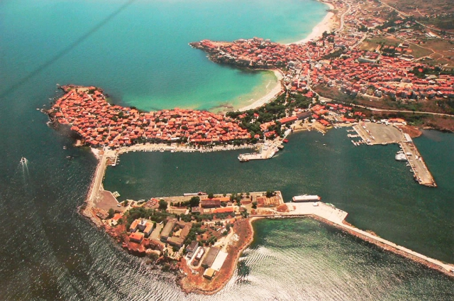
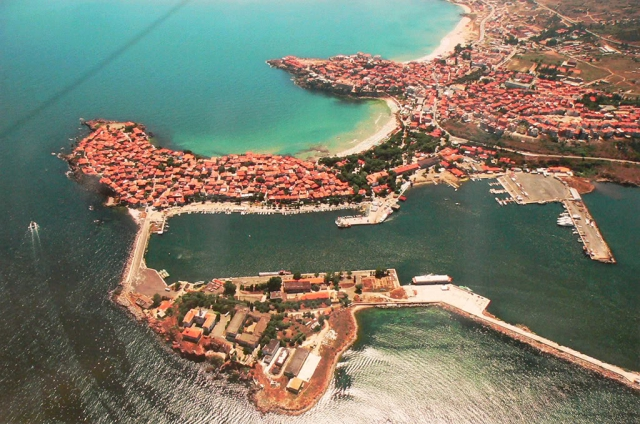
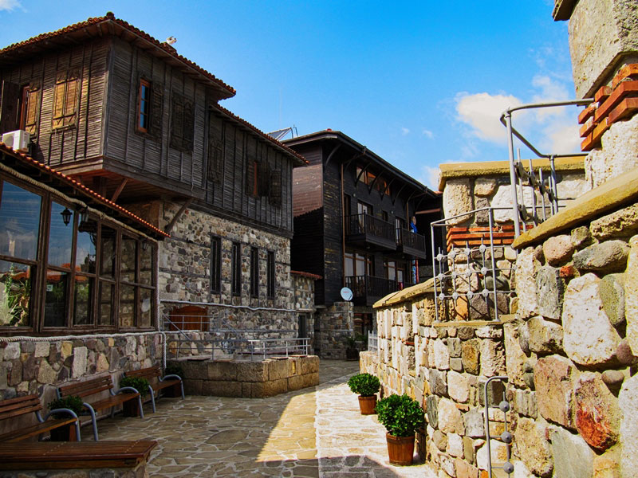
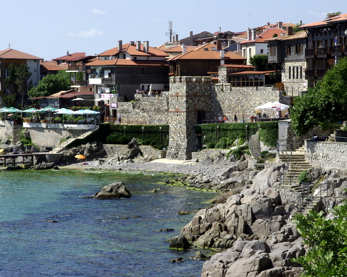
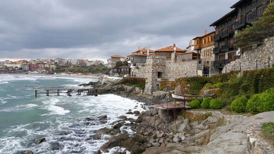

Sozopol, u nekim navodima i Sozopolj gradić je u Republici Bugarskoj i središte istoimene opštine Sozopol u okviru Burgaske oblasti. Sozopol se nalazi jugoistočnom delu Bugarske. Od prestonice Sofije grad je udaljen 430 km istočno, a od oblasnog središta, Burgasa grad je udaljen 25 km istočno. Sozopol je naselje na bugarskoj obali Crnog mora. Gradsko priobalje čini niz plaža, a u pozadini se izdižu planina Strandža. Na prostoru Sozopola vekovima su živeli Grci, da bi početkom 20. veka došlo do razmene stanovništva sa susednom Grčkom, kada su ovde naseljene bugarske prebeglice iz severne Grčke.
 

Hoteli:
- Hotel more
- Hotel Selena
- Santa Marina holiday village
- Diamanti hotel
- Martinez ApartHotel
- Hotel Villa list


